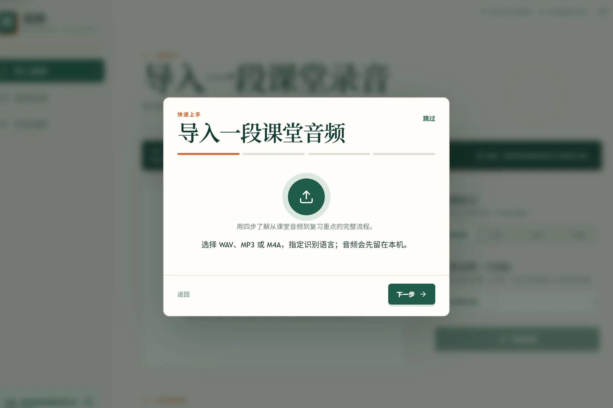
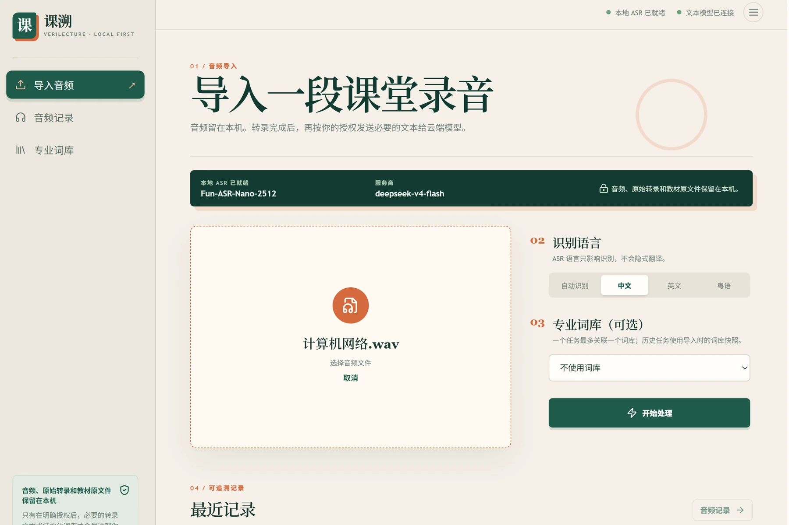

导入课堂录音
Import a recording
WAV、MP3、M4A 都可以。
WAV, MP3, and M4A are supported.
Trace every key point back to the lecture.
导入课堂录音，课溯整理复习重点；每条重点都能回到老师讲过的原音。
Import a lecture recording. VeriLecture organizes the key points and links each one back to the moment it was said.
Alpha 版本用于体验和反馈。重要录音请保留备份。 This Alpha is for evaluation and feedback. Keep backups of important recordings.

你遇到的问题
The problem
课后复习时，找到关键原话往往比重新听完一遍更难。课溯把录音、课程材料和整理结果连起来，需要确认时可以回到原音。
After class, finding the key sentence can take longer than listening again. VeriLecture links the recording, course material, and review points so you can return to the source when it matters.
工作方式
How it works
五步完成一次课堂整理，每一步都留下可回看的记录。
Five steps turn a recording into review points, with a record of what happened at each step.
WAV、MP3、M4A 都可以。
WAV, MP3, and M4A are supported.
先走本地路径，原始文字单独保存。
Use the local path first and save the raw text separately.
用教材和词库检查专业词。
Use the textbook and lexicon to check specialized terms.
把老师明确说的内容与推测分开。
Keep explicit teacher statements separate from inference.
从重点直接跳到对应时间点。
Jump from a point to its timestamp.
可追溯性
Traceability
课溯不会只给一个结论。原始内容、修正版本和课堂重点各自留存，点击重点就能回到对应时间点。
VeriLecture does not leave you with a conclusion alone. The source, revised versions, and review points stay connected, so each point leads back to its timestamp.
原始音频和原始转写始终保留。修正与编辑会生成新的版本。
Original audio and raw transcripts stay intact. Corrections and edits create new versions.
明确考点、不考内容、重复强调和系统推测分别呈现。
Exam points, exclusions, repeated emphasis, and system inference stay separate.
音频、转写或教材片段发送前，会先说明内容和用途。
Before audio, transcripts, or excerpts leave the device, you see what is sent and why.
产品实景
Product tour
界面只保留当前任务：导入、记录、词库和回听。
The interface keeps the current task in view: import, record, organize, and listen back.

音频、原始转写和课程文件默认留在你的电脑上。需要云端处理时，课溯先说明发送什么、为什么发送。
Audio, raw transcripts, and course files stay on your computer by default. If a cloud step is needed, VeriLecture shows what is sent and why.
查看隐私与安全 Read privacy and security本地转写不会上传音频，课程文件先在本机解析。
Local transcription does not upload audio. Course files are parsed locally first.
音频、转写和教材片段分别记录授权，不用一项模糊同意代替。
Audio, transcripts, and excerpts have separate consent records.
分析失败或修改结果时，原始音频和转写保持不变。
If analysis fails or a result changes, the original audio and transcript stay intact.
当前状态
Current status
从下一堂课开始
Begin with your next lecture
当前 Windows x64 安装包：v0.3.0-alpha.1。点击后直接下载。 Current Windows x64 installer: v0.3.0-alpha.1. Click to download directly.
当前可下载：Windows x64。Linux AppImage 与 macOS DMG 尚未发布。 Available now: Windows x64. Linux AppImage and macOS DMG are not published yet.